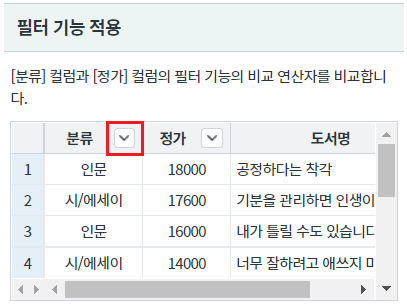
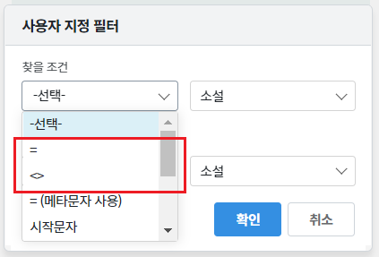
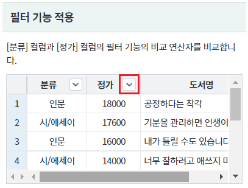
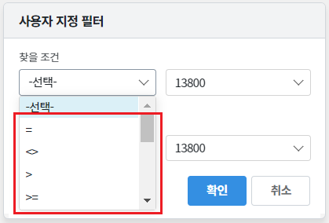
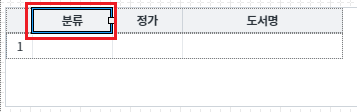
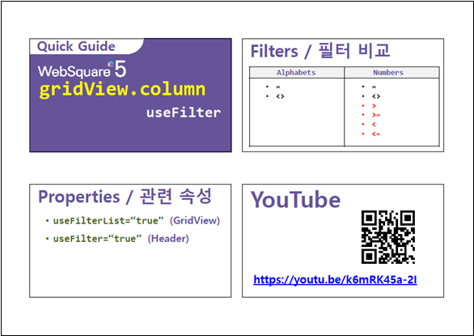

[GridView] 데이터 타입에 따른 필터 기능의 비교 연산자 비교하기
1개요
GridView에 필터 기능 적용 시 비교 연산자의 차이를 비교하는 예제입니다. 컬럼의 데이터가 숫자형으로 이루어진 경우 (>, >=, <, <=)가 추가됩니다. 이 기능은 필터 기능이 적용된 경우 별도의 설정없이 적용됩니다.
2구현된 기능
필터 기능 적용
3예제 테스트 방법
[분류] 컬럼과 [정가] 컬럼의 필터 기능의 비교 연산자를 비교합니다.
3.1필터 기능의 비교 연산자 확인하기 - 기본
- STEP1. 헤더 컬럼 [분류]의 필터 아이콘을 클릭합니다.
[브라우저(Chrome) 실행 예시]

- SETP2. 비교 연산자 확인하기
팝업 [사용자 지정 필터]에서 [찾을 조건]의 콤보 박스를 확장합니다.
[브라우저(Chrome) 실행 예시]

3.2필터 기능의 비교 연산자 확인하기 - 숫자형 데이터
- STEP1. 헤더 컬럼 [정가]의 필터 아이콘을 클릭합니다.
[브라우저(Chrome) 실행 예시]

- SETP2. 비교 연산자 확인하기
팝업 [사용자 지정 필터]에서 [찾을 조건]의 콤보 박스를 확장합니다.
숫자형 비교 연산자인 ">", ">=", "<", "<=" 가 추가된 것을 확인합니다.
[브라우저(Chrome) 실행 예시]

4구현 예시
GridView와 연결된 DataList 생성 및 연결 방법은 생략되었습니다.
4.1팝업형 필터 설정하기
GridView의 헤더 컬럼 [분류], [정가]의 속성을 정의합니다.
[필수] useFilter="true" //[default:false, true] 필터 사용 여부.
그림 1.웹스퀘어5 SP5 스튜디오의 Design 탭 예시 - 헤더 선택

그림 2.웹스퀘어5 SP5 스튜디오의 Property View(속성창) 예시

<!-- gridView 의 소스 본문 예시 --> <w2:gridView dataList="data:dlt_books_1" > <w2:header id="header1" style=""> <w2:row id="row1" style=""> <w2:column useFilter="true" value="분류"> </w2:column> <w2:column useFilter="true" value="정가"> </w2:column> <!-- 중략 --> </w2:row> </w2:header> <!-- 중략 --> </w2:gridView>
5주요 API
[header column] useFilter
useFilterList
6참고 문서
[웹스퀘어5 SP5 개발 가이드] GridView
링크 : https://docs1.inswave.com/sp5_user_guide/86bdcf48029b958b
[웹스퀘어5 SP5 개발 가이드] GridView 필터링
링크 : https://docs1.inswave.com/sp5_user_guide/86bdcf48029b958b#6842af3d03705a2b
[웹스퀘어5 SP5 개발 가이드] GridView 숫자 필터링 조건 vs. 알파벳 필터링 조건
링크 : https://docs1.inswave.com/sp5_user_guide/86bdcf48029b958b#5a7f8aff22b1c83a
7참고 동영상
GridView 숫자 필터링 조건 vs. 알파벳 필터링 조건
링크 : https://youtu.be/k6mRK45a-2I
